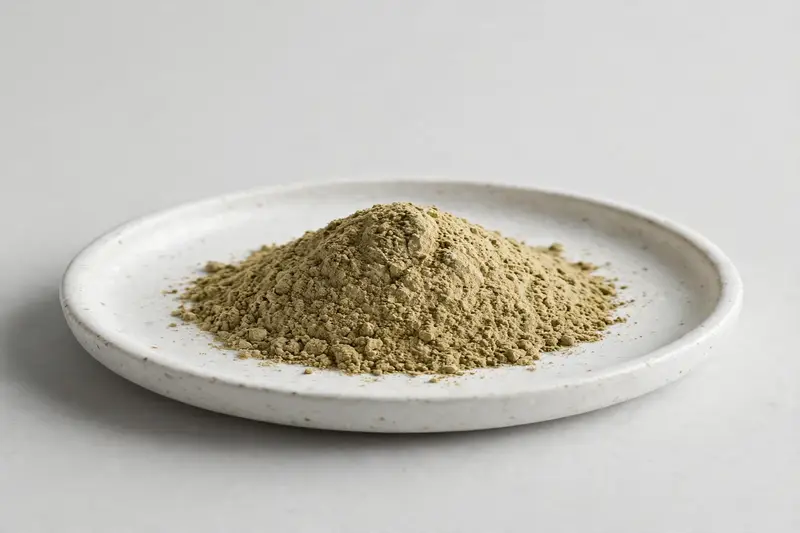

Foeniculum vulgare seed extract for digestive-positioned and flavor formulation programs.

Overview
Fennel extract is produced from Foeniculum vulgare seed and is positioned around volatile oil constituents, most commonly anethole and fenchone. Buyers request it for digestive-positioned formulations and for flavor and aroma work. As a Xi'an-based trading company sourcing through partner producers, we confirm grade feasibility and documentation only after receiving your target spec.
Specifications below reflect commonly requested options in the market — not a stock list. Share your target spec and we'll confirm exactly what we can supply, honestly.
| Specification | Details |
|---|---|
| Botanical identity | Fennel extract powder, Foeniculum vulgare seed |
| Marker compound | Commonly requested spec grades: anethole and fenchone grades; actual specs confirmed on inquiry |
| Appearance | Light greenish-brown to tan fine powder |
| Mesh size | Typically 80–100 mesh (confirm per inquiry) |
| Testing | COA/TDS arranged on request; scope agreed per your spec |
Applications
Documentation
We don't claim in-house labs or certifications we don't hold. COA and TDS documents can be arranged on request, and testing scope is agreed against your specification before supply.
FAQ
Related products
Arctium lappa
Key marker: 10:1 or inulin
View specs →Camellia sinensis (white tea)
Key marker: Tea polyphenols 20-40%
View specs →Garcinia cambogia
Key marker: HCA 50-60%
View specs →Zingiber officinale
Key marker: Steam-distilled
View specs →Curcuma longa
Key marker: Turmerone
View specs →Buyer guides
Buyer’s guide
Identity, actives, heavy metals, micro — what each section of a Certificate of Analysis means, and the red flags that tell you to walk away.
Read the guide →Buyer’s guide
Section-by-section COA walkthrough — marker assays, heavy metals, micro panels, red flags, and a buyer checklist.
Read the guide →Send your target spec and volumes — we'll respond with a tailored quotation.
Request a Quote